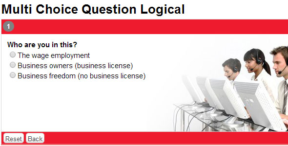
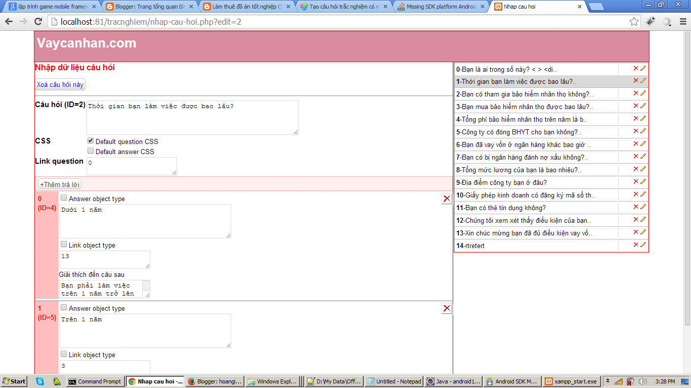
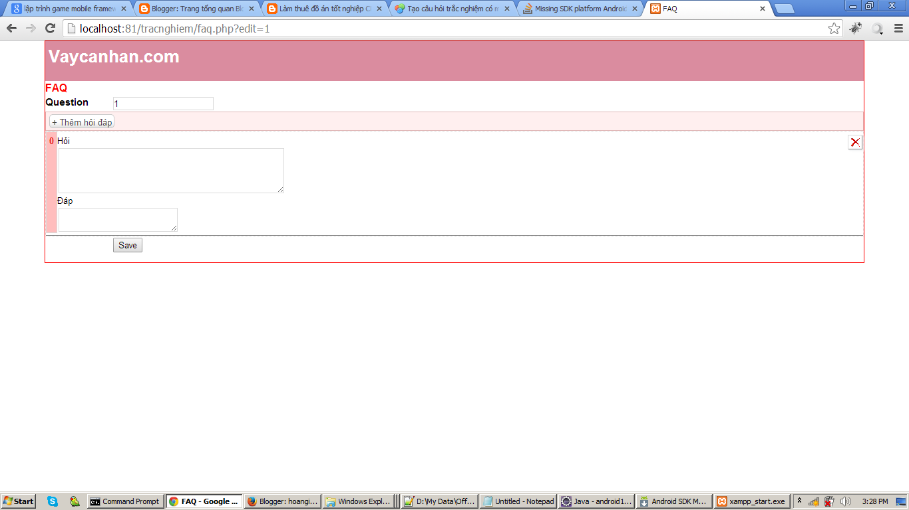

Demo: Open site: http://hn.tindung24h.com/ on your browser and choose a location to test.
Configuration
Installation
[HTML][JS]
var qview=new qChain(); //instance qChain class
//auto next question
qview.auto_next=true;
//load question
qview.load();
$(document).ready(function(){
$('#questions_holder').append(qview.get()); //add instance to document
});
FAQ
- Faq to explain the multiple choice questions
- Each question is linked to one or more of FAQ items
//get faq holder
$(document).ready(function(){
qview.faq=document.getElementById('faq'); //faq container
});
Import Data
Question Editor
- Backend using pure of php, database of mysql (free phpMyAdmin)
*Add new Question:
Go: /input.php
-Input question data require some fields:
+Question: question content
+CSS:
- Tick on 'Default question css' to use default css for question content .
- Tick on 'Default answer css' to use default css for answer content.
Look at the right sidebar is all questions created from you, then mouse over pencil icon to see the ID of that question by tooltip.
-Input Answer data:
- +Text input below the string "Answer object type" is answer content. You can execute javascript in this field by clicking on the radio "Answer object type", this section will provide the following.
- +The next Field (below "Link object type") enter the ID of the next question. Meaning: this question will connect to that question.
- +Explain to next question: add some explain string it will display in next question when user select this answer for this question.
Note: Answer content can not be empty (otherwise the error message), if you don't want users to see the question answers, provide some javascript code. We'll talk later.
Content accept HTML format
-The content type may be plain/text or html rich text, make the text question/answer lively.
Support javascript
Example: The question asked about the age of the user, which requires users to enter old age. I will use a input text shown in question so that the user entered, and then click the next button.

- Question: What is your birth date?
- CSS: tick radio "Default question CSS"
- Link question: 0
+Tick "Answer object type" to convert answer content into javascript. Write some javascript code to answer field:
var birth=document.createElement('input');
answer.appendChild(birth);
answer.appendChild(document.createTextNode('(EX: 09/04/1990)'));
-answer là Object Dom element for answer item. You can use 'append' function to do this:
var birth=document.createElement('input');
append(birth); //instead of answer.appendChild(birth);
append(document.createTextNode('(EX: 09/04/1990)'));
+Next, Tick "Link object type" checkbox to enabled javascript, and write event for input text of birth:
$( birth ).datepicker({onSelect:function(dateText, inst) {
var d1=new Date(dateText);
var d2=new Date();
var age=d2.getYear()-d1.getYear();
if(age<21 || age>60){
next_question_listener(6,[data.answer_id,birth.value,data.question]);
set_text2next(6,'Tuoi 21 den 60 moi dc vay');
} else next_question_listener(4,[data.answer_id,birth.value,data.question]);
},
changeMonth: true,
changeYear: true
});
$(birth).datepicker('option', 'dateFormat', 'yy-mm-dd' );
$(birth).datepicker('setDate', '1986-06-19');
-This code run after answer content above. This Field usually keep the javascript is written in the content of the answer, such as: javascript event,..-In this example, we create event for the input text, use the jquery datepicker when the user click on the input will bring table of dates for the users selection. Set the condition to get the next question
//the second parameter is the array of 2 elements: answer id (default: data.answer_id), the value of the answer is taken from the input text next_question_listener(6,[data.answer_id,birth.value,data.question]); //If the value of the answer not users typing, use default: data.answer next_question_listener(question_ID,[data.answer_id,data.answer,data.question]); //set explain string show to next question set_text2next(6,'Aged from 21 to 60, then get the loan');Note: of course this part of code can be written included the answer javascript content above.
You can also create your own next question button, instead the click button of the system:
var but=$('').attr({type:'button',value:'Next question'});
but.click(cty_next); //button click event
$(answer).append(but);
//next button event
function cty_next(){
//use dbtable variable, but dbtable is simple array for storing user values. We not recommand use this method
p.ref.get(1).dbtable['company']=cty.value;
//next question with question ID
next_question(8);
}
-In addition the following functions can be used to display the next button of the system://show next button show_next_button();
Save the user's quiz - show form to save the user's information
-Open include/templates.php find function name 'final_customer_form'. This form can be display in the last question.
-There are 2 types: Displays the form as a popup (popup) or place form bellow question content (page).
-sample form can be found at file include/templates.php for function 'final_customer_form', you can add/remove some fields.
//user form option
dlg_opt({
auto:1, //auto showing user form
type:'page' //place form in this answer. If type='popup' form will showing as popup.
});
//triger when load this answer
answer_callback(function(){
set_question_history(); //Save this question (refer to last question) in the Quiz history
//set_question_history('result of your tests'); //you can add answer content to this question,
//set result of user quiz,
set_history_result('result of your tests');
});
set condition for each answer + combined with the data of previous questions
-In any case, every a answer you want to link to each other question , then use event 'answer_picker'.
-get answer of user of pass questions as a condition for the next questions.
answer_picker(function(){
if(get_quest_history(16) && get_quest_history(16)[0]==48){
if(get_quest_history(17) && get_quest_history(17)[0]==38){
next_question_listener(20,[data.answer_id,data.answer,data.question]);
}
else next_question_listener(21,[data.answer_id,data.answer,data.question]);
}
});
- get_quest_history(16): get question data with ID=16 return array of [answer_id,answer_text,question_text]
- answer_id: in edit question mode (input.php), you will find answer ID.
*Edit exists question
-In the left column displays already the list of questions, you can easily edit or delete the question by clicking on the edit or delete icon.
FAQ Editor
-To add/edit the FAQ for specific questions, go the URL:
/faq.php?edit=< question_ID>To add more content to the faq click "Add FAQ item".
-To delete the contents of the faq click on icon ' X '.
Test results reports

-At this time, You will need to retrieve the history quiz.
*The History Quiz:
+full history quiz is paragraph format of::
Question 1 answer 1 ---------------- Question 2 answer 2 --------------- Question 3 answer 3 ----------------- .......
qview.get_full_histories();
+simple history quiz is a JSON object:
Ie:
{
"history":"1-1,2-5,3-6,4-9,6-12,13-31",
"answers_text":{"1":"The wage employment","5":"Over 1 year","6":"Yes","9":"Less than 1 year","12":"no","31":"X"}
}
qview.get_history();-return JSON object with 2 keys:
- history: is a sequence of questions and answers in the form of: question_ID-answer_ID, each question separate by comma.
- answers_text: is JSON object containing key = answer ID and value = answer content
-For example do you imagine is the multiple choice questions is the test whether pass or fail.
-The test result you established. It's time to get results.
qview.history.result;